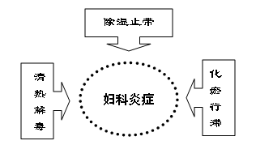

基本情况：
类 别：中药9类新药。
处方来源：康妇炎颗粒处方来源于康妇炎胶囊，原标准为：WS-11467（ZD-1467）-2002。
处方组成：蒲公英、败酱草、薏苡仁、赤芍、苍术、当归、川芎、香附、延胡索（制）、泽泻、白花蛇舌草。
功能主治：清热解毒，化瘀行滞，除湿止带。用于月经不调，痛经，附件炎，阴道炎，子宫内膜炎及盆腔炎等妇科炎症。
用法用量：口服，一次1袋，一日3次。
疗 程：7天。
规 格：5g/袋。
进 度：预计2008年获得生产批文。
合作方式：批文转让。
技术优势：
制剂工艺：
1.提取工艺合理可行：部分药材提取挥发油；部分药材醇提，部分药材水煎，不采用特殊的条件，生产环保，成本低，安全，便于实施大生产。
2.剂型合理：结合本药的特点、理化性质、适应症及口味，开发成颗粒剂，冲服。
3.质量标准可行：在质量标准研究中，建立了高效液相质量标准的方法，比目前市场上畅销的本品种其他剂型质量标准更高、易控、更科学可行。
药效报道：
1.本品具有抗菌、抗真菌及抗病毒的作用，临床上用来清化湿热，利尿通淋，用于治疗湿热下注的带下病。
2.本品清热解毒，祛瘀排脓。用于产后瘀血腹痛，慢性盆腔炎，输卵管阻塞及人流术后发热。
3.具有镇痛抗菌消炎等药理作用，对妇科的附件炎症具有良好的治疗效果。
4.具有抑制血小板聚集，改善微循环及抗炎清除自由基的作用，从而起到活血化瘀的作用，对妇科炎症的清除及修复等均具有明显的疗效；等等。
所以本品能清热解毒，化瘀行滞，除湿止带的功能，为临床疗效提供了坚实的基础。
临床应用本药，疗效确切，作用机理独特，安全。
成本优势：
每天原料药成本仅为0.3元左右，只要有效降低生产及管理成本，就为企业和商业在产品上市后留足了盈利空间。
产权优势：
独家品种，经过国家新药审评中心、SFDA、中药保护审评委员会、国家知识产权局等法定部门查新，没有发现重复的方剂、剂型在生产和保护。
市场优势：
市场认可度高：由于妇科疾病常需要长期用药，中成药在治疗妇科疾病方面发挥着重要的作用。妇科中成药市场主要包括妇科炎症用药、调经养血用药和妇科血淤症用药等三大类用药。据SFDA南方医药经济研究所“中国药品零售分析系统”和“中国医药经济运行分析系统”监测数据表明，妇科中成药约占国内中成药零售市场的9%，占国内药品市场总规模的3.8%。
2002年妇科中成药市场上，以妇科千金片、康乃馨抗宫炎片为代表治疗妇科炎症药物占据了57.75%的市场份额。以乌鸡白凤丸为代表的养血调经类的市场份额为35.21%，这两类中成药成为当前妇科用药市场的两大主力。以治疗子宫肌瘤和卵巢囊肿为代表的妇科血瘀症用药仅药占妇科中成药市场的5.63%，其市场规模远小于妇科炎症用药和调经养血类用药。
SFDA南方所调研数据表明：妇科炎症用药零售市场所占比重为68.25%，调经养血类零售市场所占比例接近80%，血淤证用药零售市场所占比重不到20%(见表1)。妇科用中成药的这种终端结构差异与产品的属性和消费行为直接相关。妇科炎症用药和调经养血类用药基本上都属于非处方药，而血淤证用药暂大多属于处方药，这就决定了后者以医院市场为主；而妇科用中成药市场的目标群体仍有某些共同的消费趋向，比如一般需要长期用药，就诊率低、对知名品牌的趋同性，这种消费行为决定了零售终端的特征，是任何妇科中成药产品不可忽视的地方。
表1 各类妇科中成药零售与医院市场分布
|
药品种类 |
零售市场 |
医院市场 |
|
妇科炎症用药 |
68.25% |
32.75% |
|
调经养血类用药 |
78.69% |
21.31% |
|
妇科血瘀证用药 |
18.77% |
81.23% |
|
妇科中成药 |
72.08% |
27.92% |
市场容量急剧增大：女性一生通常要经过经期、婚期、孕期、产褥期和更年期五个生理变化较大的周期，每个生理周期的变化都易引起各类妇科疾病的发生。我国妇科疾病的发病率相当高，全国15个省、直辖市50个市(区)的流行病学调查结果表明，我国城市妇女已婚女性妇科常见病患病率顺序依次为生殖道感染42.9%、月经紊乱34.5%(未绝经者)和痛经15.5%(未绝经者)、盆腔肿物3.9%、子宫脱垂/阴道壁膨出1.1%。其中盆腔肿物中以子宫肌瘤为主(3.4%)，41-50岁年龄组中患病率为6.8%，其中有48.4%的人发生在51岁组中。
调查数据显示，已婚妇女妇科疾病中子宫肌瘤和卵巢囊肿病人约占4.3%，生殖道感染女性约为41.7%、月经不调、痛经病人约为48.5%，并且妇科病的发病率在近几年呈现高速的提高。
比名牌产品更好的亮点：康妇炎颗粒立意新颖，科学合理，从中医理论及现代研究均证明为治疗妇科炎症的好药：
740)this.width=740" border="undefined">
以上治疗机理提高了治疗的命中率，短时间解除症状，无西药毒副作用，必将带来良好的社会效益及经济效益。